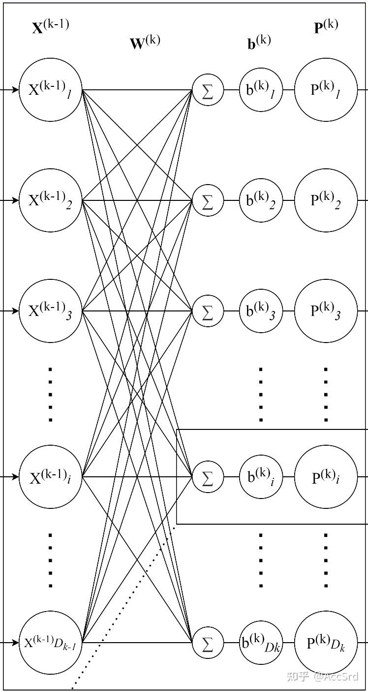
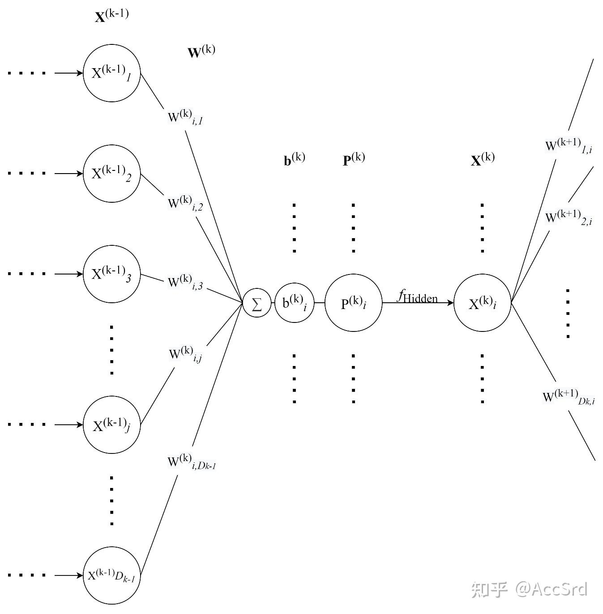
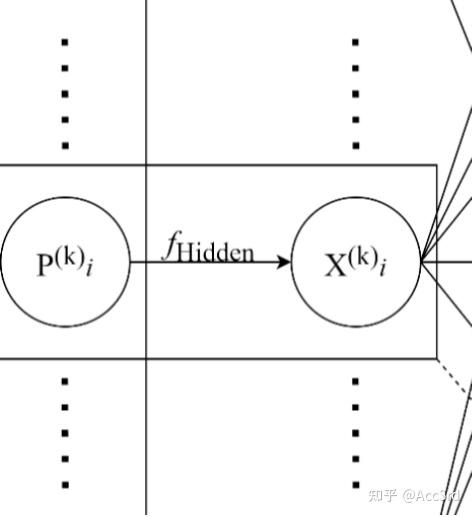
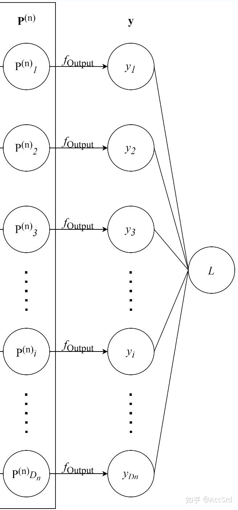
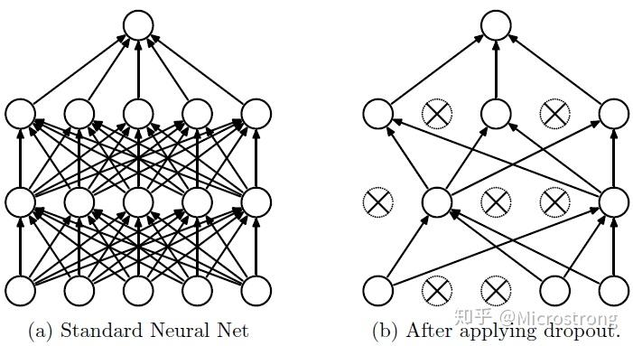
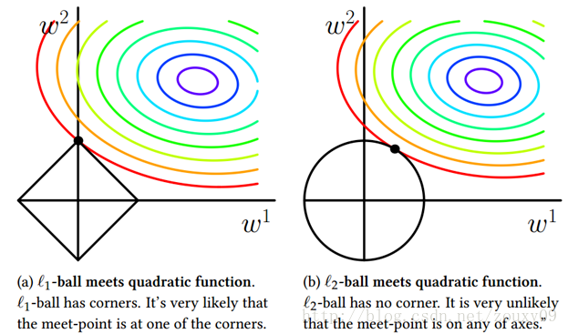

神经网络学习笔记
MLP
对于 n n n

X k − 1 , W k , b k , P k \mathbf{X}^{k-1},\mathbf{W}^k,\mathbf{b}^k,\mathbf{P}^k X k − 1 , W k , b k , P k k k k
X k : = [ X 1 k X 2 k ⋮ X D k k ] D k × 1 , W k : = [ W 1 , 1 k W 1 , 2 k ⋯ W 1 , D k − 1 k W 2 , 1 k W 2 , 2 k ⋯ W 2 , D k − 1 k ⋮ ⋮ ⋱ ⋮ W D k , 1 k W D k , 2 k ⋯ W D k , D k − 1 k ] D k × D k − 1 , b k : = [ b 1 k b 2 k ⋮ b D k k ] D k × 1 \mathbf{X}^k:=\begin{bmatrix}
X_1^k\\
X_2^k\\
\vdots\\
X_{D_k}^k\\
\end{bmatrix}_{D_k\times1},\
\mathbf{W}^k:=\begin{bmatrix}
W_{1,1}^k&W_{1,2}^k&\cdots&W_{1,D_{k-1}}^k\\
W_{2,1}^k&W_{2,2}^k&\cdots&W_{2,D_{k-1}}^k\\
\vdots&\vdots&\ddots&\vdots\\
W_{D_k,1}^k&W_{D_k,2}^k&\cdots&W_{D_k,D_{k-1}}^k\\
\end{bmatrix}_{D_k\times D_{k-1}},\
\mathbf{b}^k:=\begin{bmatrix}
b_1^k\\
b_2^k\\
\vdots\\
b_{D_k}^k\\
\end{bmatrix}_{D_k\times1}
X k : = ⎣ ⎢ ⎢ ⎢ ⎢ ⎡ X 1 k X 2 k ⋮ X D k k ⎦ ⎥ ⎥ ⎥ ⎥ ⎤ D k × 1 , W k : = ⎣ ⎢ ⎢ ⎢ ⎢ ⎡ W 1 , 1 k W 2 , 1 k ⋮ W D k , 1 k W 1 , 2 k W 2 , 2 k ⋮ W D k , 2 k ⋯ ⋯ ⋱ ⋯ W 1 , D k − 1 k W 2 , D k − 1 k ⋮ W D k , D k − 1 k ⎦ ⎥ ⎥ ⎥ ⎥ ⎤ D k × D k − 1 , b k : = ⎣ ⎢ ⎢ ⎢ ⎢ ⎡ b 1 k b 2 k ⋮ b D k k ⎦ ⎥ ⎥ ⎥ ⎥ ⎤ D k × 1
当采用 Batch（同时训练多个数据）进行训练时：
X k : = [ X 1 b 1 k X 1 b 2 k ⋯ X 1 b D b k X 2 b 1 k X 2 b 2 k ⋯ X 2 b D b k ⋮ ⋮ ⋱ ⋮ X D k b 1 k X D k b 2 k ⋯ X D k b D b k ] D k × D b \mathbf{X}^k:=\begin{bmatrix}
X_{1b_1}^k&X_{1b_2}^k&\cdots&X_{1b_{D_b}}^k\\
X_{2b_1}^k&X_{2b_2}^k&\cdots&X_{2b_{D_b}}^k\\
\vdots&\vdots&\ddots&\vdots\\
X_{D_kb_1}^k&X_{D_kb_2}^k&\cdots&X_{D_kb_{D_b}}^k\\
\end{bmatrix}_{D_k\times D_b}
X k : = ⎣ ⎢ ⎢ ⎢ ⎢ ⎢ ⎡ X 1 b 1 k X 2 b 1 k ⋮ X D k b 1 k X 1 b 2 k X 2 b 2 k ⋮ X D k b 2 k ⋯ ⋯ ⋱ ⋯ X 1 b D b k X 2 b D b k ⋮ X D k b D b k ⎦ ⎥ ⎥ ⎥ ⎥ ⎥ ⎤ D k × D b
隐藏层内传递

P k = W k X k − 1 + b k = [ ∑ j = 1 D k − 1 W 1 , j k X j k − 1 + b 1 k ∑ j = 1 D k − 1 W 2 , j k X j k − 1 + b 2 k ⋮ ∑ j = 1 D k − 1 W i , j k X j k − 1 + b i k ⋮ ∑ j = 1 D k − 1 W D k , j k X j k − 1 + b D k k ] D k × 1 = [ P 1 k P 2 k ⋮ P i k ⋮ P D k k ] D k × 1 \mathbf{P}^k=\mathbf{W}^k\mathbf{X}^{k-1}+\mathbf{b}^k=
\begin{bmatrix}
\sum_{j=1}^{D_{k-1}}W_{1,j}^kX_j^{k-1}+b_1^k\\
\sum_{j=1}^{D_{k-1}}W_{2,j}^kX_j^{k-1}+b_2^k\\
\vdots\\
\sum_{j=1}^{D_{k-1}}W_{i,j}^kX_j^{k-1}+b_i^k\\
\vdots\\
\sum_{j=1}^{D_{k-1}}W_{D_k,j}^kX_j^{k-1}+b_{D_k}^k\\
\end{bmatrix}_{D_k\times1}
=\begin{bmatrix}
P_1^k\\
P_2^k\\
\vdots\\
P_i^k\\
\vdots\\
P_{D_k}^k\\
\end{bmatrix}_{D_k\times1}
P k = W k X k − 1 + b k = ⎣ ⎢ ⎢ ⎢ ⎢ ⎢ ⎢ ⎢ ⎢ ⎢ ⎢ ⎡ ∑ j = 1 D k − 1 W 1 , j k X j k − 1 + b 1 k ∑ j = 1 D k − 1 W 2 , j k X j k − 1 + b 2 k ⋮ ∑ j = 1 D k − 1 W i , j k X j k − 1 + b i k ⋮ ∑ j = 1 D k − 1 W D k , j k X j k − 1 + b D k k ⎦ ⎥ ⎥ ⎥ ⎥ ⎥ ⎥ ⎥ ⎥ ⎥ ⎥ ⎤ D k × 1 = ⎣ ⎢ ⎢ ⎢ ⎢ ⎢ ⎢ ⎢ ⎢ ⎢ ⎡ P 1 k P 2 k ⋮ P i k ⋮ P D k k ⎦ ⎥ ⎥ ⎥ ⎥ ⎥ ⎥ ⎥ ⎥ ⎥ ⎤ D k × 1
当采用 Batch 进行训练时：
P k = W k X k − 1 + b k = [ ∑ j = 1 D k − 1 W 1 , j k X j b 1 k − 1 + b 1 k ⋯ ∑ j = 1 D k − 1 W 1 , j k X j b D b k − 1 + b 1 k ∑ j = 1 D k − 1 W 2 , j k X j b 1 k − 1 + b 2 k ⋯ ∑ j = 1 D k − 1 W 2 , j k X j b D b k − 1 + b 2 k ⋮ ⋮ ⋮ ∑ j = 1 D k − 1 W i , j k X j b 1 k − 1 + b i k ⋯ ∑ j = 1 D k − 1 W i , j k X j b D b k − 1 + b i k ⋮ ⋮ ⋮ ∑ j = 1 D k − 1 W D k , j k X j b 1 k − 1 + b D k k ⋯ ∑ j = 1 D k − 1 W D k , j k X j b D b k − 1 + b D k k ] D k × D b = [ P 1 b 1 k ⋯ P 1 b D b k P 2 b 1 k ⋯ P 2 b D b k ⋮ ⋮ ⋮ P i b 1 k ⋯ P i b D b k ⋮ ⋮ ⋮ P D k b 1 k ⋯ P D k b D b k ] D k × D b \begin{aligned}
\mathbf{P}^k=\mathbf{W}^k\mathbf{X}^{k-1}+\mathbf{b}^k&=
\begin{bmatrix}
\sum_{j=1}^{D_{k-1}}W_{1,j}^kX_{jb_1}^{k-1}+b_1^k&\cdots&\sum_{j=1}^{D_{k-1}}W_{1,j}^kX_{jb_{D_b}}^{k-1}+b_1^k\\
\sum_{j=1}^{D_{k-1}}W_{2,j}^kX_{jb_1}^{k-1}+b_2^k&\cdots&\sum_{j=1}^{D_{k-1}}W_{2,j}^kX_{jb_{D_b}}^{k-1}+b_2^k\\
\vdots&\vdots&\vdots\\
\sum_{j=1}^{D_{k-1}}W_{i,j}^kX_{jb_1}^{k-1}+b_i^k&\cdots&\sum_{j=1}^{D_{k-1}}W_{i,j}^kX_{jb_{D_b}}^{k-1}+b_i^k\\
\vdots&\vdots&\vdots\\
\sum_{j=1}^{D_{k-1}}W_{D_k,j}^kX_{jb_1}^{k-1}+b_{D_k}^k&\cdots&\sum_{j=1}^{D_{k-1}}W_{D_k,j}^kX_{jb_{D_b}}^{k-1}+b_{D_k}^k\\
\end{bmatrix}_{D_k\times D_b}\\
&=\begin{bmatrix}
P_{1b_1}^k&\cdots&P_{1b_{D_b}}^k\\
P_{2b_1}^k&\cdots&P_{2b_{D_b}}^k\\
\vdots&\vdots&\vdots\\
P_{ib_1}^k&\cdots&P_{ib_{D_b}}^k\\
\vdots&\vdots&\vdots\\
P_{D_kb_1}^k&\cdots&P_{D_kb_{D_b}}^k\\
\end{bmatrix}_{D_k\times D_b}
\end{aligned}
P k = W k X k − 1 + b k = ⎣ ⎢ ⎢ ⎢ ⎢ ⎢ ⎢ ⎢ ⎢ ⎢ ⎢ ⎢ ⎡ ∑ j = 1 D k − 1 W 1 , j k X j b 1 k − 1 + b 1 k ∑ j = 1 D k − 1 W 2 , j k X j b 1 k − 1 + b 2 k ⋮ ∑ j = 1 D k − 1 W i , j k X j b 1 k − 1 + b i k ⋮ ∑ j = 1 D k − 1 W D k , j k X j b 1 k − 1 + b D k k ⋯ ⋯ ⋮ ⋯ ⋮ ⋯ ∑ j = 1 D k − 1 W 1 , j k X j b D b k − 1 + b 1 k ∑ j = 1 D k − 1 W 2 , j k X j b D b k − 1 + b 2 k ⋮ ∑ j = 1 D k − 1 W i , j k X j b D b k − 1 + b i k ⋮ ∑ j = 1 D k − 1 W D k , j k X j b D b k − 1 + b D k k ⎦ ⎥ ⎥ ⎥ ⎥ ⎥ ⎥ ⎥ ⎥ ⎥ ⎥ ⎥ ⎤ D k × D b = ⎣ ⎢ ⎢ ⎢ ⎢ ⎢ ⎢ ⎢ ⎢ ⎢ ⎢ ⎡ P 1 b 1 k P 2 b 1 k ⋮ P i b 1 k ⋮ P D k b 1 k ⋯ ⋯ ⋮ ⋯ ⋮ ⋯ P 1 b D b k P 2 b D b k ⋮ P i b D b k ⋮ P D k b D b k ⎦ ⎥ ⎥ ⎥ ⎥ ⎥ ⎥ ⎥ ⎥ ⎥ ⎥ ⎤ D k × D b
隐藏层间传递

X k = f ( P k ) = [ f ( P 1 k ) f ( P 2 k ) ⋮ f ( P D k k ) ] D k × 1 \mathbf{X}^k=f(\mathbf{P}^k)=\begin{bmatrix}
f(P_1^k)\\
f(P_2^k)\\
\vdots\\
f(P_{D_k}^k)\\
\end{bmatrix}_{D_k\times1}
X k = f ( P k ) = ⎣ ⎢ ⎢ ⎢ ⎢ ⎡ f ( P 1 k ) f ( P 2 k ) ⋮ f ( P D k k ) ⎦ ⎥ ⎥ ⎥ ⎥ ⎤ D k × 1
当采用 Batch 进行训练时：
X k = f ( P k ) = [ f ( P 1 b 1 k ) f ( P 1 b 2 k ) ⋯ f ( P 1 b D b k ) f ( P 2 b 1 k ) f ( P 2 b 2 k ) ⋯ f ( P 2 b D b k ) ⋮ ⋮ ⋱ ⋮ f ( P D k b 1 k ) f ( P D k b 2 k ) ⋯ f ( P D k b D b k ) ] D k × D b \mathbf{X}^k=f(\mathbf{P}^k)=\begin{bmatrix}
f(P_{1b_1}^k)&f(P_{1b_2}^k)&\cdots&f(P_{1b_{D_b}}^k)\\
f(P_{2b_1}^k)&f(P_{2b_2}^k)&\cdots&f(P_{2b_{D_b}}^k)\\
\vdots&\vdots&\ddots&\vdots\\
f(P_{D_kb_1}^k)&f(P_{D_kb_2}^k)&\cdots&f(P_{D_kb_{D_b}}^k)\\
\end{bmatrix}_{D_k\times D_b}
X k = f ( P k ) = ⎣ ⎢ ⎢ ⎢ ⎢ ⎢ ⎡ f ( P 1 b 1 k ) f ( P 2 b 1 k ) ⋮ f ( P D k b 1 k ) f ( P 1 b 2 k ) f ( P 2 b 2 k ) ⋮ f ( P D k b 2 k ) ⋯ ⋯ ⋱ ⋯ f ( P 1 b D b k ) f ( P 2 b D b k ) ⋮ f ( P D k b D b k ) ⎦ ⎥ ⎥ ⎥ ⎥ ⎥ ⎤ D k × D b
其中 f ( ⋅ ) f(\cdot) f ( ⋅ )
输出层
输出层（第 n n n P n \mathbf{P}^n P n f output f_{\text{output}} f output

y \mathbf{y} y Y \mathbf{Y} Y
y = f output ( P n ) , L = Loss ( Y , y ) \mathbf{y}=f_{\text{output}}(\mathbf{P}^n),\ \mathcal{L}=\text{Loss}(\mathbf{Y},\mathbf{y})
y = f output ( P n ) , L = Loss ( Y , y )
反向传播（BP）与梯度下降
反向传播
∂ L ∂ P n = ∂ L ∂ y ⊙ f output ′ ( P n ) T \frac{\partial\mathcal{L}}{\partial\mathbf{P}^n}=\frac{\partial\mathcal{L}}{\partial\mathbf{y}}\odot f'_{\text{output}}(\mathbf{P}^n)^T
∂ P n ∂ L = ∂ y ∂ L ⊙ f output ′ ( P n ) T
{ ∂ L ∂ P k = ( ∂ L ∂ P k + 1 ⋅ W k + 1 ) ⊙ f ′ ( P k ) T ∂ L ∂ W k = X k − 1 ⋅ ∂ L ∂ P k ∂ L ∂ b k = ∂ L ∂ P k , 0 ≤ k < n \begin{dcases}
\frac{\partial\mathcal{L}}{\partial\mathbf{P}^k}=\left(\frac{\partial\mathcal{L}}{\partial\mathbf{P}^{k+1}}\cdot\mathbf{W}^{k+1}\right)\odot f'(\mathbf{P}^k)^T\\
\frac{\partial\mathcal{L}}{\partial\mathbf{W}^k}=\mathbf{X}^{k-1}\cdot\frac{\partial\mathcal{L}}{\partial\mathbf{P}^k}\\
\frac{\partial\mathcal{L}}{\partial\mathbf{b}^k}=\frac{\partial\mathcal{L}}{\partial\mathbf{P}^k}
\end{dcases} ,\quad 0\le k<n
⎩ ⎪ ⎪ ⎪ ⎪ ⎪ ⎪ ⎨ ⎪ ⎪ ⎪ ⎪ ⎪ ⎪ ⎧ ∂ P k ∂ L = ( ∂ P k + 1 ∂ L ⋅ W k + 1 ) ⊙ f ′ ( P k ) T ∂ W k ∂ L = X k − 1 ⋅ ∂ P k ∂ L ∂ b k ∂ L = ∂ P k ∂ L , 0 ≤ k < n
当采用 Batch（同时训练多个数据）进行训练时，偏置梯度更新为以下式子：
∂ L ∂ b k = J 1 × D b ⋅ ∂ L ∂ P k \frac{\partial\mathcal{L}}{\partial\mathbf{b}^k}=\mathbf{J}_{1\times D_b}\cdot\frac{\partial\mathcal{L}}{\partial\mathbf{P}^k}
∂ b k ∂ L = J 1 × D b ⋅ ∂ P k ∂ L
梯度下降
{ W ( s + 1 ) k = W ( s ) k − α ⋅ ∂ L ∂ W ( s ) k T b ( s + 1 ) k = b ( s ) k − α ⋅ ∂ L ∂ b ( s ) k T , 0 ≤ k < n \begin{dcases}
\mathbf{W}^k_{(s+1)}=\mathbf{W}^k_{(s)}-\alpha\cdot\frac{\partial\mathcal{L}}{\partial\mathbf{W}^k_{(s)}}^T\\
\mathbf{b}^k_{(s+1)}=\mathbf{b}^k_{(s)}-\alpha\cdot\frac{\partial\mathcal{L}}{\partial\mathbf{b}^k_{(s)}}^T
\end{dcases} ,\quad 0\le k<n
⎩ ⎪ ⎪ ⎪ ⎪ ⎨ ⎪ ⎪ ⎪ ⎪ ⎧ W ( s + 1 ) k = W ( s ) k − α ⋅ ∂ W ( s ) k ∂ L T b ( s + 1 ) k = b ( s ) k − α ⋅ ∂ b ( s ) k ∂ L T , 0 ≤ k < n
其中：
( s ) (s) ( s ) ( s + 1 ) (s+1) ( s + 1 ) α \alpha α D k D_k D k k k k
数学推导
描述反向传播与梯度下降更新过程：
计算输出层的 ∂ L ∂ P n \frac{\partial\mathcal{L}}{\partial\mathbf{P}^n} ∂ P n ∂ L
计算本层的 P n \mathbf{P}^n P n
计算 ∂ L ∂ y \frac{\partial\mathcal{L}}{\partial\mathbf{y}} ∂ y ∂ L y i y_i y i
MSE（均方误差）的梯度为：
L = 1 D n ∑ i = 1 D n ( Y i − y i ) 2 \mathcal{L}=\frac{1}{D_n}\sum^{D_n}_{i=1}(Y_i-y_i)^2
L = D n 1 i = 1 ∑ D n ( Y i − y i ) 2
∂ L ∂ y = [ − 2 Y 1 + 2 y 1 D n − 2 Y 2 + 2 y 2 D n ⋯ − 2 Y D n + 2 y D n D n ] {\frac{\partial\mathcal{L}}{\partial\mathbf{y}}}=\left[
\begin{darray}{ccc}
\frac{-2Y_1+2y_1}{D_n}&\frac{-2Y_2+2y_2}{D_n}&\cdots&\frac{-2Y_{D_n}+2y_{D_n}}{D_n}
\end{darray}\right]
∂ y ∂ L = [ D n − 2 Y 1 + 2 y 1 D n − 2 Y 2 + 2 y 2 ⋯ D n − 2 Y D n + 2 y D n ]
Cross-Entropy Error（交叉熵损失）的梯度为：
L = ∑ i = 1 D n Y i log y i \mathcal{L}=\sum^{D_n}_{i=1}Y_i\log{y_i}
L = i = 1 ∑ D n Y i log y i
∂ L ∂ y = [ Y 1 y 1 Y 2 y 2 ⋯ Y D n y D n ] {\frac{\partial\mathcal{L}}{\partial\mathbf{y}}}=\left[
\begin{darray}{ccc}
\frac{Y_1}{y_1}&\frac{Y_2}{y_2}&\cdots&\frac{Y_{D_n}}{y_{D_n}}
\end{darray}\right]
∂ y ∂ L = [ y 1 Y 1 y 2 Y 2 ⋯ y D n Y D n ]
a. 与 b. 点乘得到 ∂ L ∂ P n \frac{\partial\mathcal{L}}{\partial\mathbf{P}^n} ∂ P n ∂ L
递推计算上一层的 ∂ L ∂ P k \frac{\partial\mathcal{L}}{\partial\mathbf{P}^k} ∂ P k ∂ L
计算本层的 P k \mathbf{P}^k P k
下一层的 ∂ L ∂ P k + 1 \frac{\partial\mathcal{L}}{\partial\mathbf{P}^{k+1}} ∂ P k + 1 ∂ L W k + 1 \mathbf{W}^{k+1} W k + 1 f ′ ( P ( s ) k ) T f'(\mathbf{P}^k_{(s)})^T f ′ ( P ( s ) k ) T ∂ L ∂ P k \frac{\partial\mathcal{L}}{\partial\mathbf{P}^k} ∂ P k ∂ L
递推计算上一层的权值梯度 ∂ L ∂ W k \frac{\partial\mathcal{L}}{\partial\mathbf{W}^k} ∂ W k ∂ L
本层输入 X k − 1 \mathbf{X}^{k-1} X k − 1 ∂ L ∂ P k \frac{\partial\mathcal{L}}{\partial\mathbf{P}^k} ∂ P k ∂ L
递推计算上一层的偏置梯度 ∂ L ∂ b k \frac{\partial\mathcal{L}}{\partial\mathbf{b}^k} ∂ b k ∂ L
单数据训练时，为本层 ∂ L ∂ P k \frac{\partial\mathcal{L}}{\partial\mathbf{P}^k} ∂ P k ∂ L
Batch 训练时，为本层 J 1 × D b ⋅ ∂ L ∂ P k \mathbf{J}_{1\times D_b}\cdot\frac{\partial\mathcal{L}}{\partial\mathbf{P}^k} J 1 × D b ⋅ ∂ P k ∂ L ∂ L ∂ P k \frac{\partial\mathcal{L}}{\partial\mathbf{P}^k} ∂ P k ∂ L
梯度下降更新上一层的权值 W ( s + 1 ) k \mathbf{W}^k_{(s+1)} W ( s + 1 ) k b ( s + 1 ) k \mathbf{b}^k_{(s+1)} b ( s + 1 ) k
权值更新为原权值减去学习率乘以权值梯度的转置 ∂ L ∂ W ( s ) k T \frac{\partial\mathcal{L}}{\partial\mathbf{W}^k_{(s)}}^T ∂ W ( s ) k ∂ L T
偏置更新为原偏置减去学习率乘以偏置梯度的转置 ∂ L ∂ b ( s ) k T \frac{\partial\mathcal{L}}{\partial\mathbf{b}^k_{(s)}}^T ∂ b ( s ) k ∂ L T
重复 2. - 5. 直至更新至第一层
重复 1. - 6. 直至损失函数小于事先给定的阈值 / 达到迭代次数
Numpy 实现
1 2 3 4 5 6 7 8 9 10 11 12 13 14 15 16 17 18 19 20 21 22 23 24 25 26 27 28 29 30 31 32 33 34 35 36 37 38 39 40 41 42 43 44 45 46 47 48 49 50 51 52 53 54 55 56 57 58 59 60 61 62 63 64 65 66 67 68 69 70 71 72 73 74 75 76 77 78 79 80 81 82 83 84 85 86 87 88 89 90 91 92 93 94 95 96 97 98 99 100 101 102 103 import numpy as npimport matplotlib.pyplot as pltMSE = lambda y, t : np.mean((y - t) ** 2 ) MSE_f = lambda y, Y : 2 * (y - Y) / Y.shape[0 ] CEE = lambda y, t : np.sum (y * np.log(t)) CEE_f = lambda y, Y : Y / y class Layer : def __init__ (self, input_n, param ): self .input_n = input_n self .n = param['n' ] self .weights = np.random.uniform(size = (self .n, input_n)) * 0.01 self .biases = np.zeros((self .n, 1 )) self .learning_rate = param['learning_rate' ] self .sigma = param['sigma' ] self .sigma_d = param['sigma_d' ] def forward (self, input ): self .output = self .sigma(self .weights @ input + self .biases) def update (self, input ): self .weights -= self .learning_rate * (input @ self .error_term).T self .biases -= self .learning_rate * (np.ones((1 , self .error_term.shape[0 ])) @ self .error_term).T class All_Connect_Layer (Layer ): def __init__ (self, input_n, param ): super ().__init__(input_n, param) def calc_loss (self, next_error_term, next_weights ): error = next_error_term @ next_weights self .error_term = error * self .sigma_d(self .output).T class Output_Layer (Layer ): def __init__ (self, input_n, param ): super ().__init__(input_n, param) def calc_loss (self, y, error_f ): error = error_f(self .output, y).T self .error_term = error * self .sigma_d(self .output).T class MLP : def __init__ (self, layer_array, x, y, error_f, seed ): assert y.shape[0 ] == layer_array[-1 ]['n' ] self .x = x self .y = y self .layers = [] self .output_n = y.shape[0 ] self .error_f = error_f self .batch_size = 1 np.random.seed(seed) self .layers.append(All_Connect_Layer(x.shape[0 ], layer_array[0 ])) if len (layer_array) > 2 : for i in range (1 , len (layer_array) - 1 ): self .layers.append(All_Connect_Layer(layer_array[i-1 ]['n' ], layer_array[i])) self .layers.append(Output_Layer(layer_array[-2 ]['n' ], layer_array[-1 ])) def iterate (self ): random_indices = np.random.permutation(self .x.shape[1 ]) x_random, y_random = self .x[:, random_indices], self .y[:, random_indices] for x, y in zip ([x_random], [y_random]): self .layers[0 ].forward(x) for i in range (1 , len (self .layers)): self .layers[i].forward(self .layers[i-1 ].output) self .layers[-1 ].calc_loss(y, self .error_f) for i in range (len (self .layers) - 2 , -1 , -1 ): self .layers[i].calc_loss(self .layers[i+1 ].error_term, self .layers[i+1 ].weights) self .layers[0 ].update(x) for i in range (1 , len (self .layers)): self .layers[i].update(self .layers[i-1 ].output) self .output = self .layers[-1 ].output return x_random, y_random def training (self, epochs, test, label, loss_f ): plot_epoch, plot_training, plot_test = [], [], [] for epoch in range (epochs): x_random, y_random = self .iterate() plot_epoch.append(epoch) output = self .test(x_random) train_loss = loss_f(y_random, output) plot_training.append(train_loss) result = self .test(test) test_loss = loss_f(label, result) plot_test.append(test_loss) print (f"Epoch {epoch} , Train Loss: {train_loss:.4 f} , Test Loss: {test_loss:.4 f} " ) plt.plot(plot_epoch, plot_training, label = 'Train' ) plt.plot(plot_epoch, plot_test, color = 'orange' , label = 'Test' ) plt.title('Loss' ) plt.legend() plt.show() def test (self, x ): self .layers[0 ].forward(x) for i in range (1 , len (self .layers)): self .layers[i].forward(self .layers[i-1 ].output) return self .layers[-1 ].output
优化策略
Xavier 初始化
为了尽量达到输入、输出方差一致的目标而采用的初始化办法。
激活函数
Sigmoid
ReLU
Tanh
均匀分布 （取值上下限）
± 6 D n − 1 + D n \pm\sqrt{\frac{6}{D_{n-1}+D_n}} ± D n − 1 + D n 6 ± 12 D n − 1 + D n \pm\sqrt{\frac{12}{D_{n-1}+D_n}} ± D n − 1 + D n 1 2 ± 4 6 D n − 1 + D n \pm4\sqrt{\frac{6}{D_{n-1}+D_n}} ± 4 D n − 1 + D n 6
高斯分布 （取值标准差）
2 D n − 1 + D n \sqrt{\frac{2}{D_{n-1}+D_n}} D n − 1 + D n 2 4 D n − 1 + D n \sqrt{\frac{4}{D_{n-1}+D_n}} D n − 1 + D n 4 4 2 D n − 1 + D n 4\sqrt{\frac{2}{D_{n-1}+D_n}} 4 D n − 1 + D n 2
数据标准化
X ′ = X − μ ⃗ σ ⃗ \mathbf{X}'=\frac{\mathbf{X}-\vec{\mu}}{\vec{\sigma}}
X ′ = σ X − μ
Batch Normalization
通过归一化手段，将每层输入强行拉回均值 0 方差为 1 的标准正态分布，这样使得激活输入值分布在非线性函数梯度敏感区域，从而避免梯度消失问题，大大加快训练速度。
优化激活函数
激活函数
Dropout
在前向传播的时候，让某个神经元的激活值以一定的概率 p p p

r k − 1 = Bernoulli ( p ) , dim r k − 1 = dim X k − 1 X ′ k − 1 = r k − 1 ⊙ X k − 1 1 − p P k = W k X ′ k − 1 + b k \begin{gathered}
\mathbf{r}^{k-1}=\text{Bernoulli}(p),\quad \dim{\mathbf{r}^{k-1}}= \dim{\mathbf{X}^{k-1}}\\
\mathbf{X'}^{k-1}=\frac{\mathbf{r}^{k-1}\odot\mathbf{X}^{k-1}}{1-p}\\
\mathbf{P}^k=\mathbf{W}^k\mathbf{X'}^{k-1}+\mathbf{b}^k
\end{gathered}
r k − 1 = Bernoulli ( p ) , dim r k − 1 = dim X k − 1 X ′ k − 1 = 1 − p r k − 1 ⊙ X k − 1 P k = W k X ′ k − 1 + b k
反向传播时，只更新本轮正在工作的神经元权值。
为了维持权重参数，在前向传播时对剩下的神经元乘以补偿系数1 / ( 1 − p ) 1/(1-p) 1 / ( 1 − p )
测试时不进行 Dropout。
权重衰退（L2 正则化）
权重衰退的目的是让模型权重减小（控制在某一个范围内），以此来减小模型的复杂性，从而抑制过拟合。

L = L 0 + λ 2 ∣ ∣ W ∣ ∣ 2 ⇒ W ( s + 1 ) k = W ( s ) k − α ⋅ ∂ L ∂ W ( s ) k T = W ( s ) k − α ⋅ ( ∂ L 0 ∂ W ( s ) k T + λ W ( s ) k ) \begin{aligned}
\mathcal{L}&=\mathcal{L}_0+\frac{\lambda}{2}||\mathbf{W}||^2\\
\Rightarrow\mathbf{W}^k_{(s+1)}&=\mathbf{W}^k_{(s)}-\alpha\cdot\frac{\partial\mathcal{L}}{\partial\mathbf{W}^k_{(s)}}^T\\
&=\mathbf{W}^k_{(s)}-\alpha\cdot\left(\frac{\partial\mathcal{L}_0}{\partial\mathbf{W}^k_{(s)}}^T+\lambda\mathbf{W}^k_{(s)}\right)
\end{aligned}
L ⇒ W ( s + 1 ) k = L 0 + 2 λ ∣ ∣ W ∣ ∣ 2 = W ( s ) k − α ⋅ ∂ W ( s ) k ∂ L T = W ( s ) k − α ⋅ ( ∂ W ( s ) k ∂ L 0 T + λ W ( s ) k )
Numpy 实现
1 2 3 4 5 6 7 8 9 10 11 12 13 14 15 16 17 18 19 20 21 22 23 24 25 26 27 28 29 30 31 32 33 34 35 36 37 38 39 40 41 42 43 44 45 46 47 48 49 50 51 52 53 54 55 56 57 58 59 60 61 62 63 64 65 66 67 68 69 70 71 72 73 74 75 76 77 78 79 80 81 82 83 84 85 86 87 88 89 90 91 92 93 94 95 96 97 98 99 100 101 102 103 104 105 106 107 108 109 110 111 112 113 114 115 116 117 118 119 120 import numpy as npimport matplotlib.pyplot as pltMSE = lambda y, t : np.mean((y - t) ** 2 ) MSE_f = lambda y, Y : 2 * (y - Y) / Y.shape[0 ] CEE = lambda y, t : np.sum (y * np.log(t)) CEE_f = lambda y, Y : Y / y class Layer : def __init__ (self, input_n, param ): self .input_n = input_n self .n = param['n' ] self .weights = np.random.randn(self .n, input_n) * np.sqrt(4. / (input_n + self .n)) self .biases = np.zeros((self .n, 1 )) self .learning_rate = param['learning_rate' ] self .sigma = param['sigma' ] self .sigma_d = param['sigma_d' ] self .weight_decay = param['weight_decay' ] self .dropout_rate = param['dropout' ] self .dropout_array = np.tile(np.random.binomial(1 , 1 - self .dropout_rate, input_n), (self .n, 1 )) def forward (self, input , is_final = False ): dropout_param = 0 if is_final else self .dropout_rate self .output = self .sigma((self .weights * self .dropout_array / (1 - dropout_param)) @ input + self .biases) def update (self, input ): self .weights -= self .learning_rate * (self .weights * self .weight_decay + (input @ self .error_term).T) * self .dropout_array self .biases -= self .learning_rate * (np.ones((1 , self .error_term.shape[0 ])) @ self .error_term).T self .dropout_array = np.tile(np.random.binomial(1 , 1 - self .dropout_rate, self .input_n), (self .n, 1 )) class All_Connect_Layer (Layer ): def __init__ (self, input_n, param ): super ().__init__(input_n, param) def calc_loss (self, next_error_term, next_weights ): error = next_error_term @ next_weights self .error_term = error * self .sigma_d(self .output).T class Output_Layer (Layer ): def __init__ (self, input_n, param ): super ().__init__(input_n, param) def calc_loss (self, y, error_f ): error = error_f(self .output, y).T self .error_term = error * self .sigma_d(self .output).T class MLP : def __init__ (self, layer_array, x, y, error_f, batch_size, seed ): assert y.shape[0 ] == layer_array[-1 ]['n' ] self .x = x self .y = y self .layers = [] self .output_n = y.shape[0 ] self .error_f = error_f self .batch_size = batch_size np.random.seed(seed) self .layers.append(All_Connect_Layer(x.shape[0 ], layer_array[0 ])) if len (layer_array) > 2 : for i in range (1 , len (layer_array) - 1 ): self .layers.append(All_Connect_Layer(layer_array[i-1 ]['n' ], layer_array[i])) self .layers.append(Output_Layer(layer_array[-2 ]['n' ], layer_array[-1 ])) def gen_batch (self, x, y ): x_batch, y_batch = [], [] for i in range (self .batch_size): indices = np.arange(i, x.shape[1 ], self .batch_size) x_batch.append(x[:, indices]) y_batch.append(y[:, indices]) return x_batch, y_batch def iterate (self ): random_indices = np.random.permutation(self .x.shape[1 ]) x_random, y_random = self .x[:, random_indices], self .y[:, random_indices] x_batch, y_batch = self .gen_batch(x_random, y_random) for x, y in zip (x_batch, y_batch): self .layers[0 ].forward(x) for i in range (1 , len (self .layers)): self .layers[i].forward(self .layers[i-1 ].output) self .layers[-1 ].calc_loss(y, self .error_f) for i in range (len (self .layers) - 2 , -1 , -1 ): self .layers[i].calc_loss(self .layers[i+1 ].error_term, self .layers[i+1 ].weights) self .layers[0 ].update(x) for i in range (1 , len (self .layers)): self .layers[i].update(self .layers[i-1 ].output) self .output = self .layers[-1 ].output return x_random, y_random def training (self, epochs, test, label, loss_f ): plot_epoch, plot_training, plot_test = [], [], [] for epoch in range (epochs): x_random, y_random = self .iterate() plot_epoch.append(epoch) output = self .test(x_random) train_loss = loss_f(y_random, output) plot_training.append(train_loss) result = self .test(test) test_loss = loss_f(label, result) plot_test.append(test_loss) print (f"Epoch {epoch} , Train Loss: {train_loss:.4 f} , Test Loss: {test_loss:.4 f} " ) plt.plot(plot_epoch, plot_training, label = 'Train' ) plt.plot(plot_epoch, plot_test, color = 'orange' , label = 'Test' ) plt.title('Loss' ) plt.legend() plt.show() def test (self, x, is_final = False ): if is_final: for layer in self .layers: layer.dropout_array = np.ones((layer.n, layer.input_n)) self .layers[0 ].forward(x) for i in range (1 , len (self .layers)): self .layers[i].forward(self .layers[i-1 ].output, is_final) return self .layers[-1 ].output